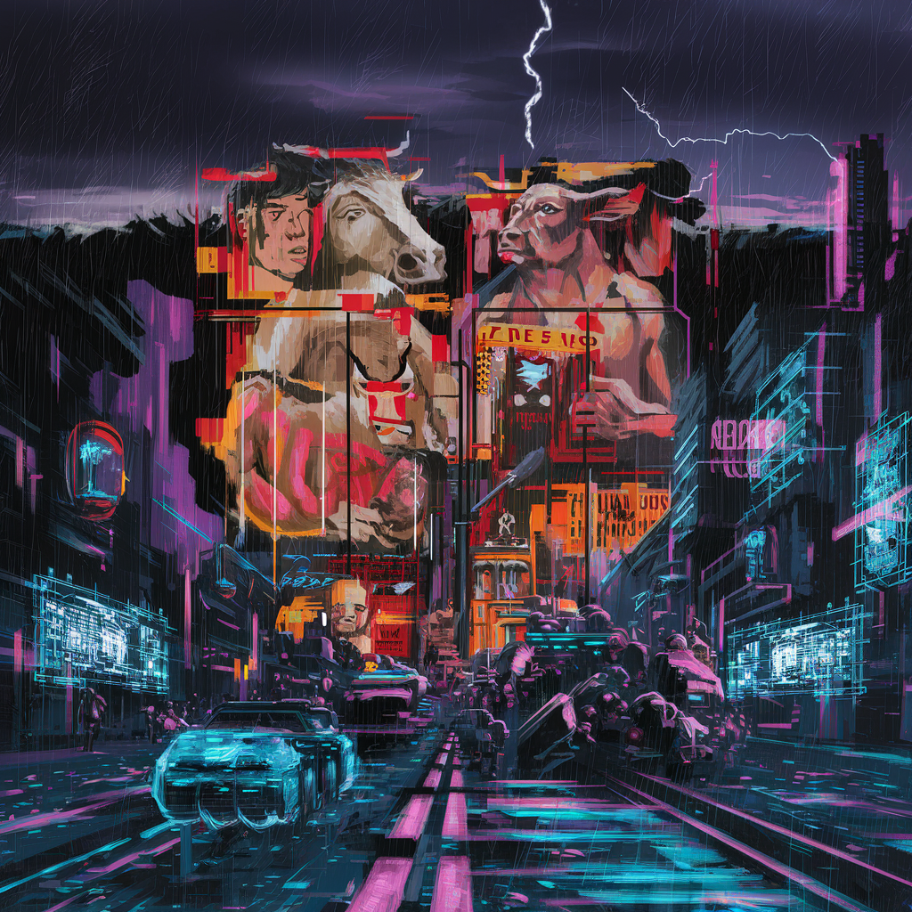
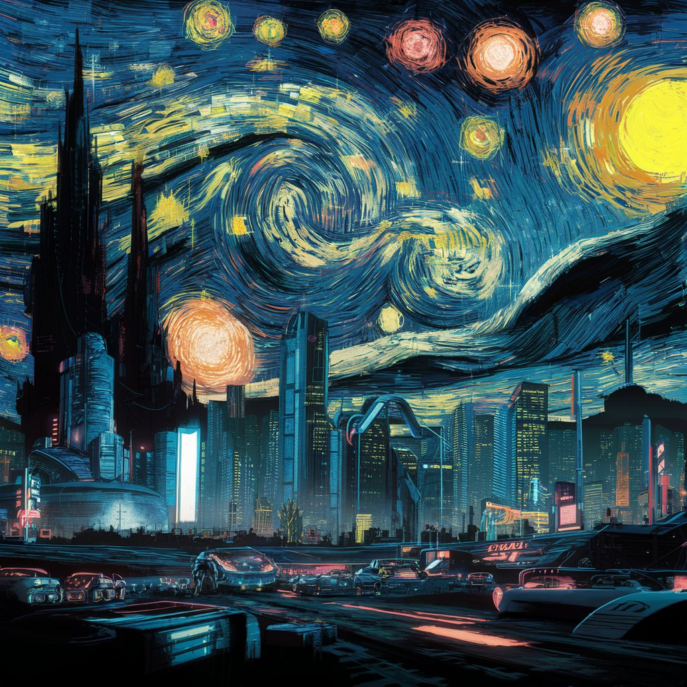
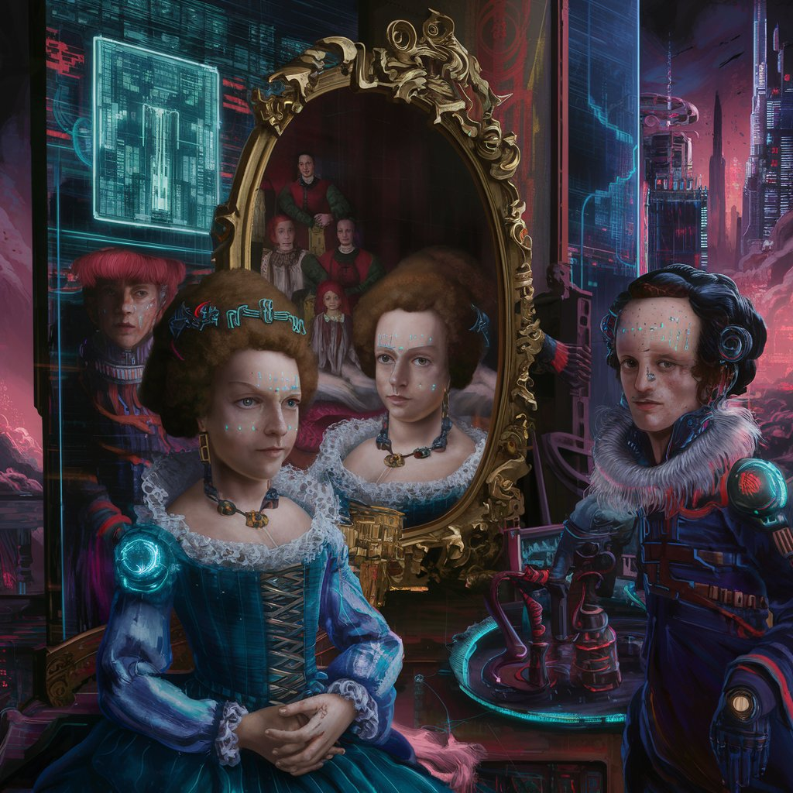

Ciber-Art: Donde la Vanguardia Ciberpunk se Encuentra con los Genios del Arte
Bienvenidos a Ciber-Art, donde el pasado se fusiona con el futuro en un intrigante escaparate de arte ciberpunk presentado por artistas antiguos. En esta plataforma única, nos sumergimos en un universo donde las habilidades artísticas de los maestros del pasado se aplican a la estética ciberpunk, creando una experiencia visual verdaderamente innovadora y emocionante.
Desde el Renacimiento hasta el Barroco, los grandes artistas del pasado han sido revitalizados en CiberArt para explorar temas de tecnología, distopía y la interacción humana con la era digital. ¿Puedes imaginar las creaciones de Leonardo da Vinci o Caravaggio, pero interpretadas en un contexto ciberpunk? En CiberArt, esto se convierte en una realidad fascinante.
Guernica
En esta versión ciberpunk de "Guernica", Picasso nos lleva a reflexionar sobre los peligros de un futuro dominado por la tecnología, donde la guerra y la opresión pueden manifestarse de formas aún más insidiosas y deshumanizantes.
La noche estrellada
En esta reinterpretación ciberpunk de "La Noche Estrellada", van Gogh nos invita a reflexionar sobre el impacto de la tecnología en nuestras vidas y el equilibrio entre la belleza y la oscuridad en un futuro dominado por la realidad digital.
Las meninas
"Las Meninas" en estilo ciberpunk es una exploración fascinante de la intersección entre la historia y la tecnología, una fusión de lo antiguo y lo nuevo que nos obliga a cuestionar nuestra propia comprensión de la realidad en un mundo cada vez más digitalizado.